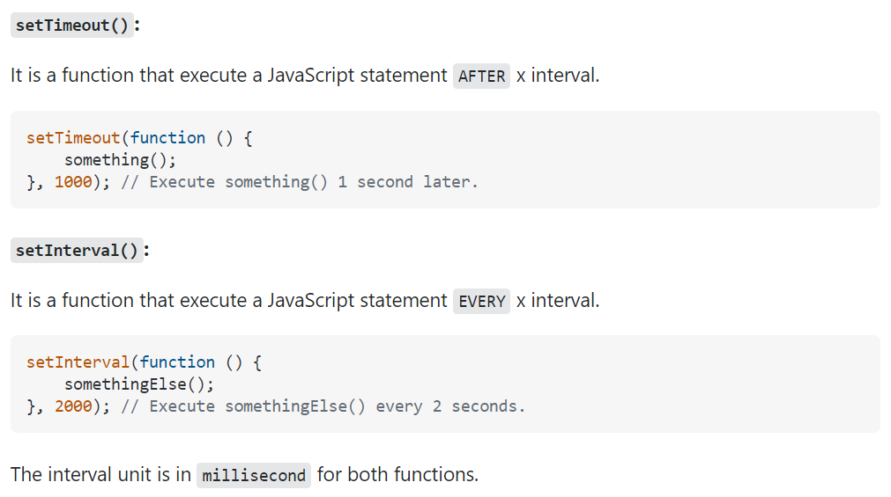
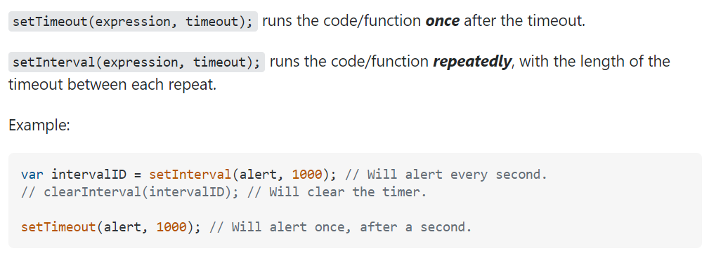

The setTimeout() method calls a function or evaluates an expression after a specified number of milliseconds.
Tip: 1000 ms = 1 second. Tip: The function is only executed once.
If you need to repeat execution, use the setInterval() method. Tip: Use the clearTimeout() method to prevent the function from running.

